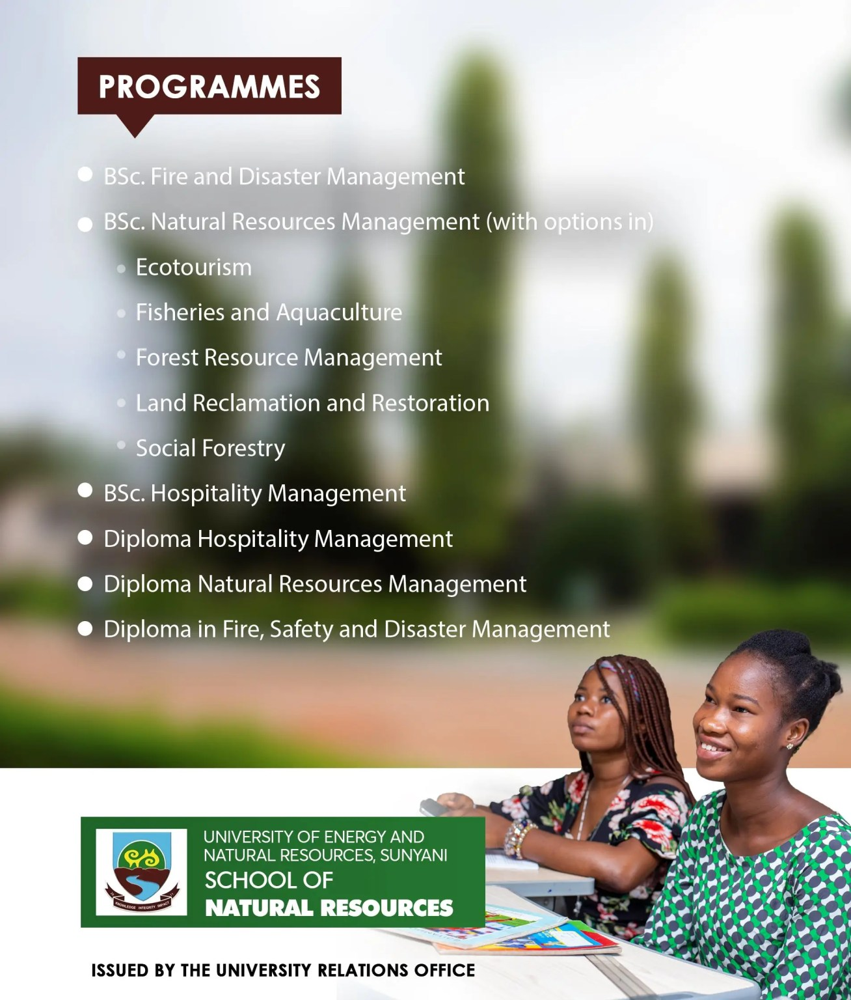

- BSc.BSc Hospitality Management
- Dip.Diploma Natural Resources Management

SCHOOL OF LAW AND MANAGEMENT SCIENCES.
- BSc. Professional French
- BSc. Resource Enterprise and Entrepreneurship
- Diploma Enterprise Management
SCHOOL OF AGRICULTURE AND TECHNOLOGY (DORMAA AHENKRO CAMPUS)
- 1. BSc. Agribusiness
- BSc. Agriculture with options in
Animal Production
- Crop Production
- Horticulture
- Diploma Agriculture
SCHOOL OF GEOSCIENCES (DORMAA AHENKRO CAMPUS)
- 1. BSc. Climate Change and Sustainability Development
- Crop Production
- 2. BSc. Planning and Sustainability
- Diploma Geo-Information Science